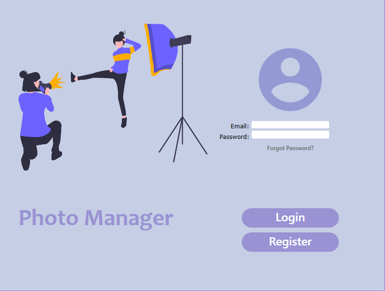
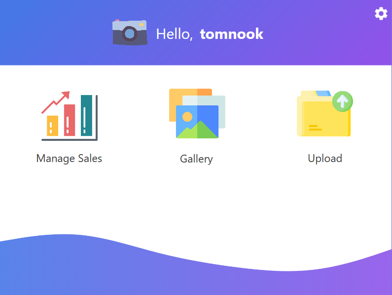
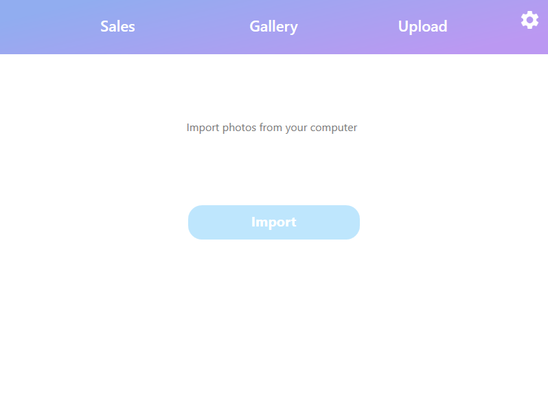
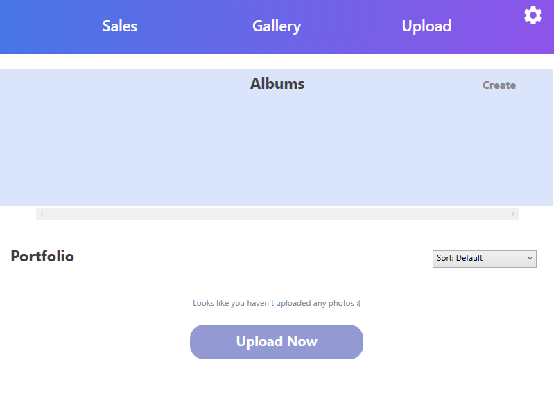
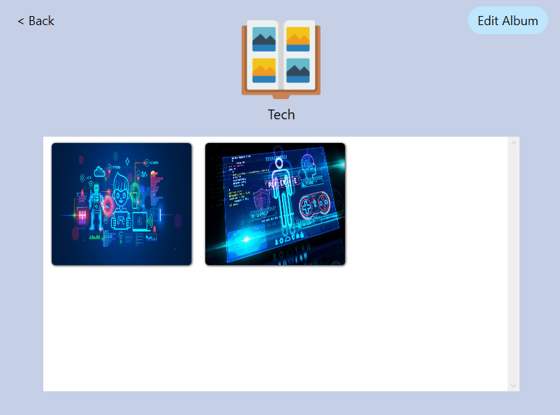
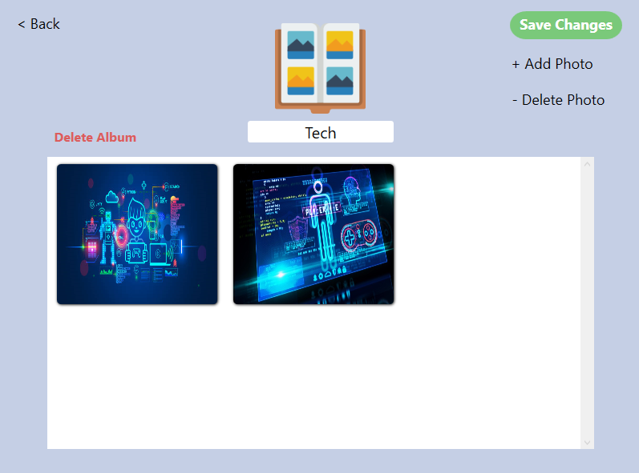
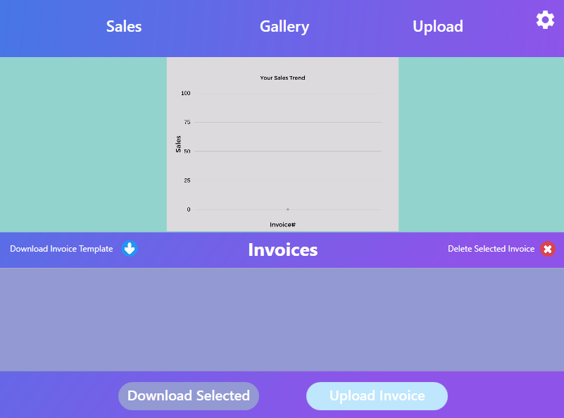
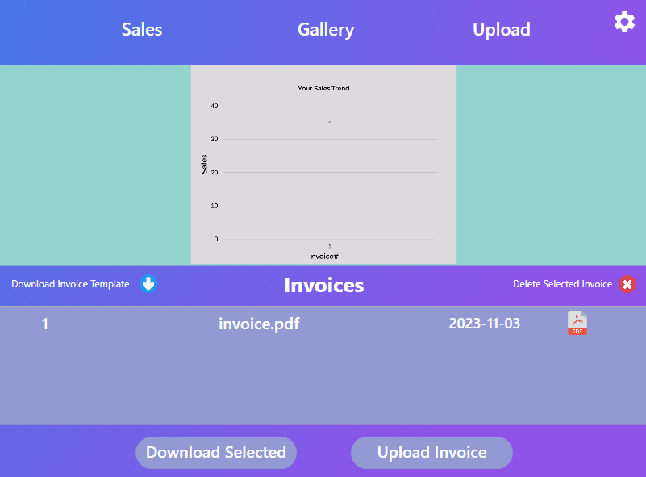

NOTE: This was a project for a class that focused on proper design on the UI of applications, thus some of our ideas portrayed in the application are centered more around design and how it looks,
and was not a requirement that all of the functionality was implemented. The core feature of uploading photos is functional in the application, but the sales management part we assumed to function
properly if built with full functionality. If parts of the application look odd or unfinished, it may be because we expected the user to see something similar or assumed to have a certain functionality to the ideas we portray for that certain aspect of the project.

This application was a collaborative project I built with a team. The main idea was to develop a photo management application where photographers (novice or professional)
could keep their photos for easy access. In addition, more professional users can keep track of their business sales by uploading their sales records and be met with
a visual representation of their data.
When the user logs in, they will see a dashboard with different features of the applications presented to them. They can check their photo library
to manage their work and albums, check their sales charts and upload invoices, and upload photos by clicking on the corresponding buttons on the application.

The upload photo section of the application will allow the user to upload photos from their file explorer to their gallery.

If the user goes to their photo library, they can manage their albums and look at their portfolio, categorizing them into a digital album space. Here they can add/delete/edit their photos
and put them up for sale if they run a business. For organization, they can create albums where the user can add or delete photos they wish, as well as price them if they wish.




In the sales chart section of the application, the user will be able to see a graph that shows their sales trend over the course of a few days, and ideally be able to
view their data with different types of visuals of their choice. These graphs will ideally update as they upload their invoices and sales records. They can delete
invoices as they wish, and even download a template of an invoice supplied by the application.

